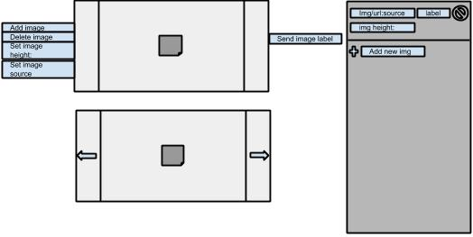

Image Menu:
This component allows the author or user to put images into a viewable array and cycle through them. If there are multiple images in the menu clicking on the arrows current image will cycle to the next.
Listener Channels
-
Add image: takes an output image info from another component and adds it to the menu
-
Delete image: listens for a signal from another component and deletes the current image
-
Set image height: listens for a text input from another component and changes the image dimensions
-
Set image source: listens for a text input from another component to change the current image for another
Output Channel:
-
Send current image label: The output channel will send out the current image label, this will be defaulted in an array order (1,,,2,,,3,,,4...ect.). The author can change the name of this label to suit their needs.
